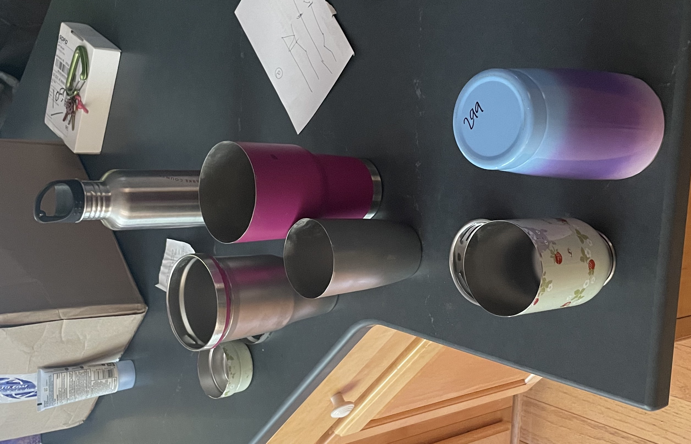
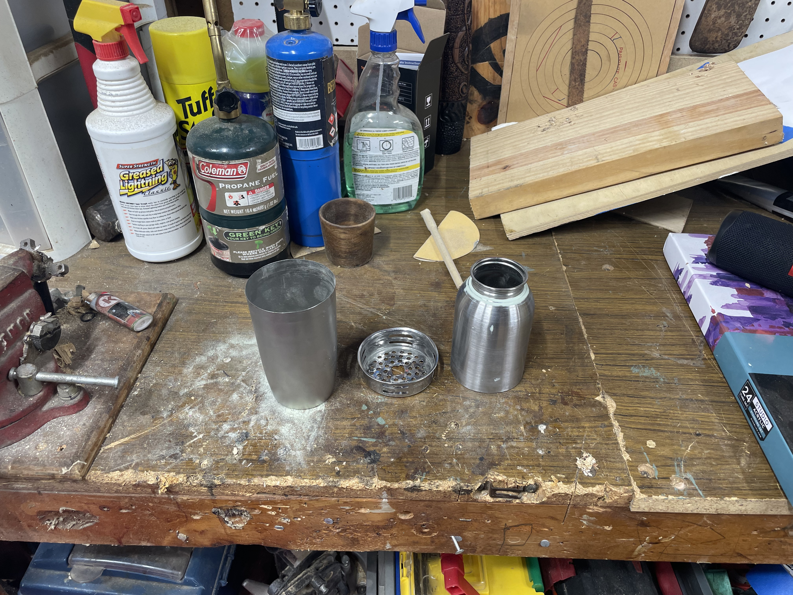
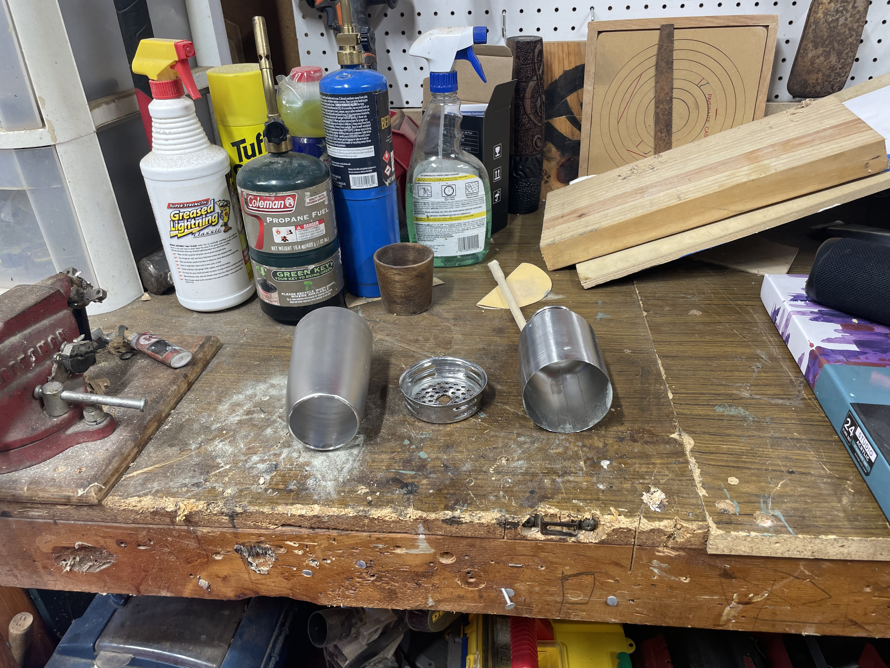
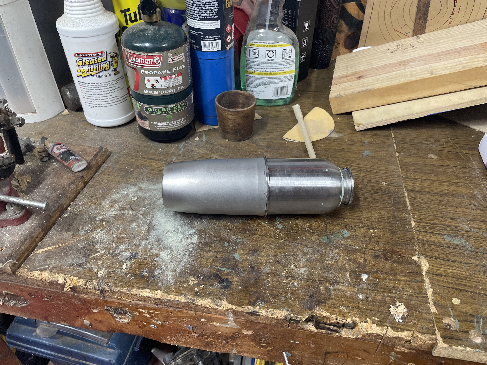
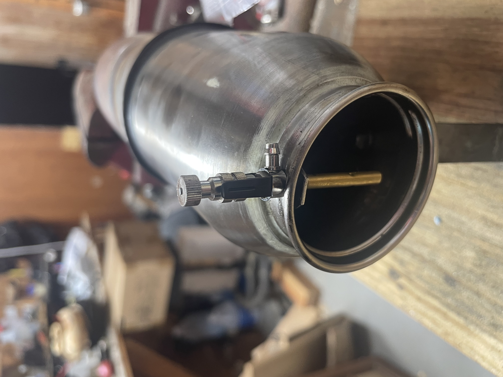
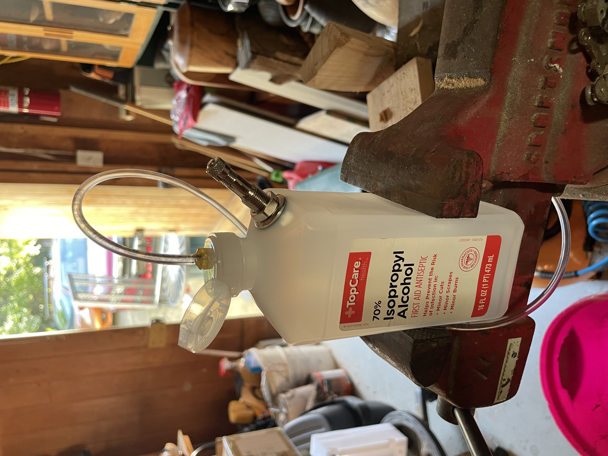
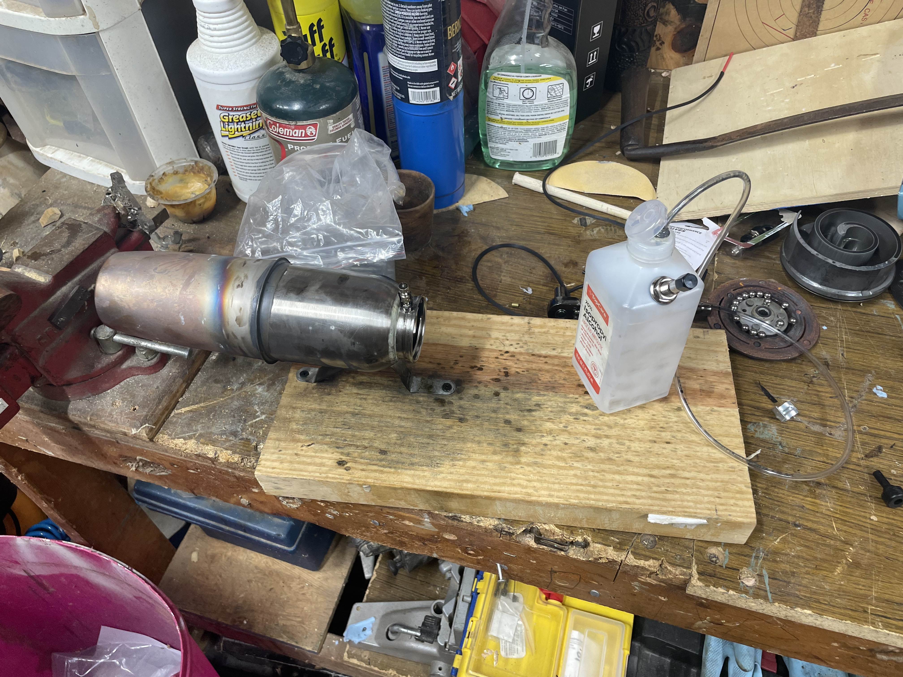

Low Speed Ramjet v1
Although more of a torch and less of a motor due to the low speed design, this is my first attempt to make a homemade ramjet following the designs by Larry Cottrill for his Maggie Muggs Low Speed Ramjet.
Objective
PLEASE, PLEASE BE CAREFUL!!
If you decide, of your own free will, to try an recreate anything I do here, you will HURT YOURSELF. Flamable fuels are far more flamable than you think, and you will get hurt. Please be safe.
I found these plans after I became aware of the Boom Prize and began thinking about various powerplant solutions. Although it quickly became clear that this motor has no direct feasability, it is a cool learning opportunity with very few well documented success stories online (maybe worth noting for safety reasons).
I have a few goals with this project:
- Expand my hands on experience with non-reciprocating engines
- Learn about similar simple thrust engines, eg pulese jets, afterburners, and turbo/ram jets
- Give me an exuse to read some aero textbooks and get some experience on fluid flow/drag modeling software
Steps
The Build
I set the goal to use as many parts as I could from around my home and from thrift stores. There's something I love about making things from junk (its cheap).
Junk List:
- stainless steel insulated coffee cup from goodwill
- stainless steel childrens sippy ladybug bottle from local thrift
- 10mm bolt, nut, and 2 conduit straps from "the bin"
- needle valve from model airplane engine I had since I was 10 (O.S. MAX 35FP?)
- rubbing alcohol bottle
- screen gasket for injector gasket
- trusty 2x8 scrap
- JB Weld
- sink drain strainer
- 5/32 brass tubing
- 3/16 vinyl tubing
- replacement valve stem
- rechargable, windproof lighter






